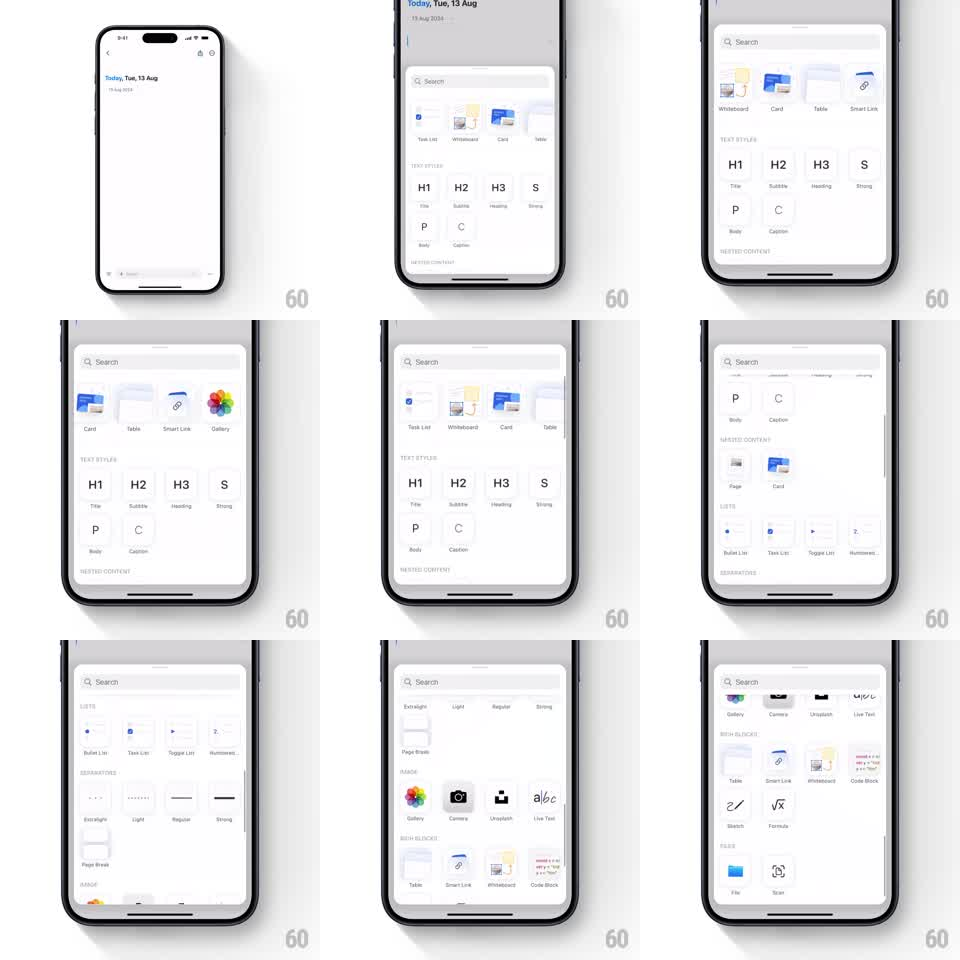

Media
Frame-by-frame

Rebuild this interaction 1:1: Craft's insert sheet - from a white document, a light sheet slides up with a search field and a rich catalog of blocks: a horizontally scrolling row of block types up top, then vertical sections for text styles, nested content, lists, separators, and media.

Rebuild this interaction 1:1: Craft's insert sheet - from a white document, a light sheet slides up with a search field and a rich catalog of blocks: a horizontally scrolling row of block types up top, then vertical sections for text styles, nested content, lists, separators, and media.
## Integration
Integration: stack-agnostic spec - springs given as stiffness/damping, timed motions as duration + curve; map every value to your framework and animation library of choice.
## Scene
White document ("Today, Tue, 13 Aug"). The sheet: rounded top corners, grabber, a Search field, then a horizontal carousel of block cards (Task List, Whiteboard, Card, Table, Smart Link, Gallery). Below, labeled sections: TEXT STYLES (H1, H2, H3, S, P, C tiles), NESTED CONTENT (Page, Card), LISTS (Bullet, Task, Toggle, Numbered), SEPARATORS (rule variants, Page Break), IMAGE (Gallery, Camera, Unsplash, Live Text), RICH BLOCKS (Table, Smart Link, Whiteboard, Code Block, Sketch, Formula), FILES (File, Scan).
## Motion spec
Pattern: sliding catalog sheet with nested horizontal carousels.
- The sheet slides up over the document (~350ms, ease-out) to ~90% height, the document dimming slightly behind it.
- The sheet body scrolls vertically through its sections with standard inertial scrolling and rubber-band at the ends.
- The block-type carousel scrolls horizontally with its own inertia, independent of the vertical scroll - diagonal drags lock to the dominant axis.
- Section content fades in once as the sheet first opens (staggered 40ms per section, 200ms fades) - scrolling later does not re-animate.
- Dismiss by dragging the sheet down past halfway (falls away) or tapping the dimmed document.
## Calibration
- The sheet is a tool palette: opening should feel instant, under 400ms, with no springy overshoot.
- Axis locking between the carousel and the sheet is the make-or-break detail - a vertical scroll must never hijack a horizontal browse.
## Reduced motion
Sheet fades in at full height (150ms); carousels scroll without inertia flourish.
## Don't miss
- The first row is a carousel, not a grid - the off-screen block types peeking in from the right edge signal it.
- Text-style tiles show real typographic previews (H1 big, C small caption) - the tile is the sample.